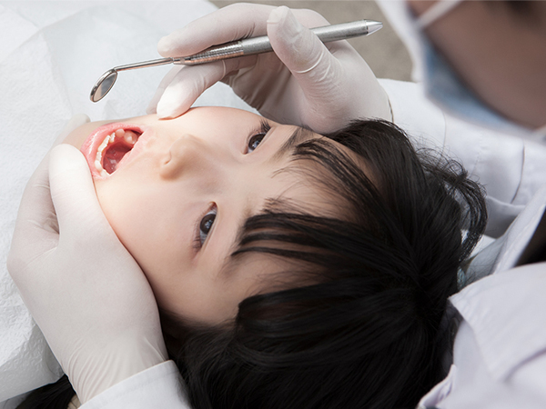
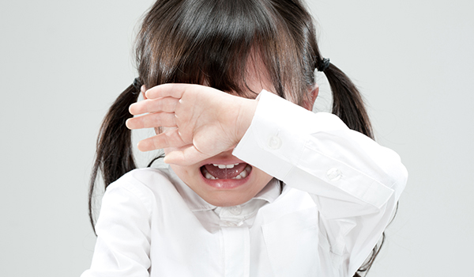
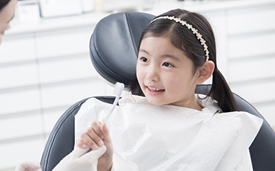

<%=m_client_en%>
잘못된 치아 건강은 부정교합을 유발하며, 발음문제나 안면발달 장애를 초래할 수 있습니다.
또, 구강관리가 어려워 충치나 기타질환이 쉽게 발생합니다.
빠른 경우 보통 6~8세부터 교정이 가능하긴 하지만 사람마다 구강구조와 치아가 다르기 때문에
치과에 내원하셔서 정확한 상담 후에 교정시기를 결정하시는 것이 좋습니다.
치아 배열을 만들기 위해 어린이 때부터 교정을 시도하는 분들이 많죠.
삐뚤삐뚤한 치아나 덧니, 벌어진 앞니 등이 우려되는 어린이라면
저작기능과 심미적으로도 아름다운 치아관리를 위해
7세부터 첫 검진을 받으시고, 미리 어린이 치아교정을 받으시기 바랍니다.
특히 영구치가 자리를 잡는 초등학교 3~4학년을 넘기지 않는다면
더욱 수월한 교정이 가능할 것입니다.

소아청소년의 성장 및 발육 과정은 성인과 달리 골격적인 문제를 바로 잡을 수 있습니다.
즉 우수한 치료결과를 얻을 수 있으며 교정치료 기간도 상대적으로 짧습니다.

치아와 턱뼈의 성장은 20세까지 진행되는 신체적 변화의 중요한 과정 중 하나입니다.
소아의 유치가 빠지고 새로나는 변화와 상악과 하악의 시기별 성장은
가지런한 치아와 갸름한 턱선의 중요한 요소로 작용합니다.
결과적으로, 소아기때부터 치아관리를 꾸준히 받게 되면 원하는 치아와 턱선은 물론 건강까지 챙기실 수 있습니다.
유치는 추후 빠지는 치아이기에 관리가 다소 소홀할 수 있습니다.
그러나, 영구치가 나오는 길목이기 때문에 문제가 생겼을 시
치료를 받으시는 것이 좋습니다.

영구치가 나온 후는 턱뼈의 성장이 본격화되는 시기입니다.
그만큼 부정교합이 발생할 가능성이 있는지 확인하고 적절히 조치해야 하는
시기이기도 합니다.
청소년기는 치아교정을 하기에 적절한 시기입니다.
무엇보다 청소년의 활동성향을 고려하여
개인에 맞는 치아교정을 선택하시는 것이 중요합니다.